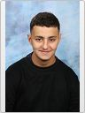

À propos de moi
Passionné par le routage réseau et les technologies numériques, je développe de solides compétences en administration système, cybersécurité et architecture réseau. Curieux et attentif aux détails, j’aime comprendre ce qui se cache derrière chaque connexion, chaque protocole, chaque paquet de données. Mon objectif est de concevoir des infrastructures fiables et sécurisées tout en restant à jour sur les dernières évolutions du monde numérique.
LINKEDIN : Mohamed Sami
NUMÉRO DE TÉLÉPHONE : 07 36 78 26 14
ADRESSE : 212 RUE DE JEAN JAURÈS
ADRESSE EMAIL : mohamedsami.cv@gmail.com
LA PROVIDENCE
Mes compétences
Je suis capable de monter des vidéos, de les animer pour en faire un objet professionnel ou ludique. Je suis actuellement inscrit dans un programme BTS avec pour objectif d’approfondir mes capacités à gérer un réseau, comprendre les protocoles réseau et développer d’autres compétences techniques. Je maîtrise le développement.
Je suis un travailleur très motivé et consciencieux, toujours prêt à collaborer avec mon équipe
Avec un sens du travail bien fait et un esprit coopératif, je m’efforce constamment de dépasser les attentes
J’aborde mes tâches avec enthousiasme, dévouement et un esprit collaboratif
Expérience professionnelle
J’ai été chargé du montage vidéo pour l’entreprise ADN Production, pour des chaînes de télévision telles que France 3. J’ai eu l’opportunité de collaborer à la production de divers projets artistiques, ce qui m’a ensuite inspiré à créer ma propre collection de NFT.
Visitez l’établissement où j’ai passé mon baccalauréat.
Visitez l’établissement où je suis actuellement en BTS
Mes passions
Regarder, jouer, analyser des stratégies, collectionner des objets souvenirs.
Programmer, utiliser de nouveaux logiciels, explorer l’IA et la technologie.
Art : dessiner, peindre, explorer l’histoire de l’art, visiter des expositions.
Créer et monter des vidéos, apprendre de nouvelles techniques, collaborer.
Nom |
Prénom |
Classe |
Publié par Mohamed-Sami le 6 octobre 2025.